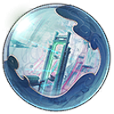
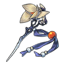
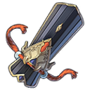

추천 광추
섬뜩한 밤
회복효율 +12% · 아군 필살기 치유
효과 자세히
아군 필살기 → 최저 HP 비율 아군 HP 10% 회복. 치유 대상 공격력 +2.4%, 최대 +12% 2턴.
수술 후의 대화
회복효율 +16% · 필살기 치유량 +24%
효과 자세히
필살기 이외의 치유에는 광추 치유량 증가가 적용되지 않음.
알맞은 타이밍
효저 +32% · 효과 저항 비례 치유량
효과 자세히
효저의 45%만큼 치유량 증가, 최대 +27%로 효저 60% 조건.
등가교환
턴 시작 시 동료 에너지 +16pt
효과 자세히
현재 에너지 50% 미만인 다른 아군 중 임의의 1명.
증식
일반 공격 → 행동 게이지 +20%
효과 자세히
다음 행동을 앞당겨 일반 공격 SP 수급 빈도 증가.
추천 유물
태양과 번개의 여전사 4 · 불로인의 선주 2
- 머리
 주옵션HP부옵션속도 · HP% · 효과 저항 · 방어력%
주옵션HP부옵션속도 · HP% · 효과 저항 · 방어력% - 손
 주옵션공격력부옵션속도 · HP% · 효과 저항 · 방어력%
주옵션공격력부옵션속도 · HP% · 효과 저항 · 방어력% - 몸통
 주옵션치유량 보너스부옵션속도 · HP% · 효과 저항 · 방어력%
주옵션치유량 보너스부옵션속도 · HP% · 효과 저항 · 방어력% - 다리
 주옵션속도부옵션HP% · 효과 저항 · 방어력%
주옵션속도부옵션HP% · 효과 저항 · 방어력% - 구체

주옵션HP%부옵션속도 · 효과 저항 · 방어력% - 매듭
 주옵션에너지 회복효율부옵션속도 · HP% · 효과 저항 · 방어력%
주옵션에너지 회복효율부옵션속도 · HP% · 효과 저항 · 방어력%
이 조합을 추천하는 이유
여전사 동료 치유 → 속도 +6% 추가·파티 치피 +15%. 선주 속도 120 → 파티 공격력 +8%.
흔적을 남기지 않은 과객 4 · 부러진 용골 2
- 머리

주옵션HP부옵션속도 · HP% · 효과 저항 · 방어력% - 손

주옵션공격력부옵션속도 · HP% · 효과 저항 · 방어력% - 몸통
 주옵션치유량 보너스부옵션속도 · HP% · 효과 저항 · 방어력%
주옵션치유량 보너스부옵션속도 · HP% · 효과 저항 · 방어력% - 다리
 주옵션속도부옵션HP% · 효과 저항 · 방어력%
주옵션속도부옵션HP% · 효과 저항 · 방어력% - 구체
 주옵션HP%부옵션속도 · 효과 저항 · 방어력%
주옵션HP%부옵션속도 · 효과 저항 · 방어력% - 매듭
 주옵션에너지 회복효율부옵션속도 · HP% · 효과 저항 · 방어력%
주옵션에너지 회복효율부옵션속도 · HP% · 효과 저항 · 방어력%
이 조합을 추천하는 이유
과객 치유량 +10% · 시작 SP +1. 용골 효저 30% → 파티 치피 +10%.
이 정도면 잘 키웠다
선택한 세팅 기준 · —는 확인된 수치 없음
아군 치유로 여전사를 발동합니다.
| 스탯 | 추천 스탯 | 준종결 | 종결 |
|---|---|---|---|
| HP | 6000 | — | — |
| 속도 | 133.4+ | — | — |
| 에너지 회복효율 | 119.44%+[1]기본 100%에 5성 +15 매듭의 에너지 회복효율 19.44%p를 더한 총량입니다. | — | — |
세팅 기준·출처
공개 가이드에서 이 세팅의 준종결 또는 종결 수치를 확인하지 못했습니다.
스탯 조건과 각주
- 에너지 회복효율 · 추천 스탯 기본 100%에 5성 +15 매듭의 에너지 회복효율 19.44%p를 더한 총량입니다. ↑
성혼과 추천 돌파
2돌 위급한 아군 지속 치유 · 4돌 피격 에너지 회복.
1피격 후 HP ≤ 30% → 자가 회복
HP 최대치 15%+400 회복. 전투당 1회.
2필살기 → 저HP 아군 지속 치유추천
HP 30% 이하 아군 턴 시작 시 나타샤 HP 최대치 6%+160, 1턴.
3전투 스킬 +2 · 일반 공격 +1
스킬·일반 공격 레벨 상한 각각 15·10.
4피격 후 에너지 +5pt추천
뛰어난 의술
5필살기·특성 +2
필살기·특성 레벨 상한 각각 15.
6일반 공격 추가 물리 피해
나타샤 HP 최대치의 40%.
추천 파티


기본 운영과 행적
광역 피해 직후 한꺼번에 회복
평소 일반 공격으로 SP 확보 → 위험한 디버프는 전투 스킬로 정화 → 팀 피해 직후 필살기.
- 승급 2단계 정화 행적 선해금. 지속 치유는 대상 턴에 발동.
행적 육성 순서
필살기 → 전투 스킬 → 특성 → 일반 공격
아하 속도 계산기 →기준과 출처 · 2026-11-27
4.7 데이터 · Prydwen 장비 참고 · 자료실 편성 예시